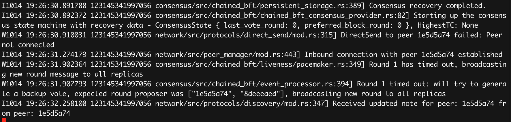
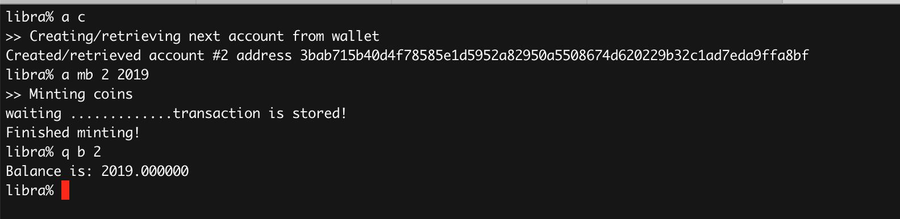

前一篇文章深入Libra: 使用测试网络介绍了使用cli连接Libra的测试网络的方法，如果你想使用Libra搭建自己的联盟应用程序，你需要搭建自己的Libra网络。本文介绍了如何搭建一个私有网络。
Libra技术
Libra实现的是一个称为LibraBFT的共识算法，它是HotStuff共识协议的改进版。它具有拜占庭容错功能，能够在3f + 1个结点间达成共识，可以抵御f 个结点的双花攻击和分叉攻击。该协议安全性证明简单，便于执行，而且性能较快。Libra系统通过3轮网络通信即可达成共识。支持每秒1000笔交易，每笔交易从产生到最终确认需要10秒钟。
HotStuff 算法论文由云计算公司 VMWare 的研究团队发表，其安全性及可用性已经过完整的数学证明。论文作者有 5 人，分别为 Maofan Yin、Dahlia Malkhi、Michael K. Reite、Guy Golan Gueta、Ittai Abraham。第一作者是尹茂帆（Ted Yin），可以在网上搜到对他的专访，
和其它常见的区块链的实现不同，Libra没有Block的概念，你可以把它看成一个数据库，只有交易列表的概念，我没有出块的说法。
在阅读Libra技术白皮书、文章和代码的过程中，感觉Libra设计者和开发者对比和借鉴了很多的区块链的思想，总是选择合适的方案和技术去实现自己的目标，下面看看Libra和其它区块链的比较吧:
1、和比特币一样，隐藏真实身份，采用密钥系统作为地址
“Libra 协议不会将帐户与现实世界的身份联系起来，用户可以通过生成多个密钥对来自由创建多个帐户，由同一用户控制的帐户彼此之间不会有固有联系。“
2、初始阶段，和超级账本（Hyperledger）一样， 需要授权才能加入节点
3、和 Tezos 一样，Libra 有链上治理。 将来会从一种类似委托权益证明（DPoS）系统（币如EOS或steem）演变为完全去中心化权益证明生态系统。
4、和以太坊一样，Libra 支持货币“可编程”
5、和以太坊一样，Libra 区块链认为权益证明是未来大势所趋，但似乎现在还没有准备好
“随着时间的推移，会员资格将转变为完全开放，无论是在许可型还是非许可型状态下，Libra 区块链都将向所有人开放:任何消费者、开发者或公司都可以使用 Libra 网络、在这个网络上构建产品，并通过他们的服务实现增值作用。”
6、和币安的原生代币 BNB 一样，Libra 代币也会被大量销毁
7、与 coda 一样，用户无需持有整个交易历史记录
8、像 EOS 一样，Libra 还没有完成任何工作， 一切还在路上
官方文档：运行本地网络
官方文档Run a Local Network介绍了使用libra_swarm启动本地网络的方法。本文先介绍这种方法，再介绍它的不足之处。
libra_swarm用来启动指定的校验节点和一个本地区块链，如果你只是临时启动一个网络进行测试的话，这个方法可以帮助你很容易的搭建一个本地测试网络。
libra_swarm包含四个flag:
-l | --enable_logging: 允许日志输出-h | --help: 帮助信息-s | --start_client: 启动libra client cli-v | --version: 版本信息
两个option:
-n | --num_nodes <num_nodes>: 启动的本地节点的数量，默认是1-c | --config_dir <config_dir>: 配置文件、日志、存储的文件夹保存的位置。不指定的话会创建临时文件夹，退出的时候文件夹中的文件会被删除。
首先让我们启动一个节点的网络，熟悉一下:
|
|
|
|
可以看到它创建了一个默认的faucet密钥，存放在"/var/folders/gq/jd9v5dd95p570hkztblb8ht40000gn/T/a5007f59bd703f6e2b9251ac68b7ef9d/temp_faucet_keys中。 同时还创建了节点的文件夹/var/folders/gq/jd9v5dd95p570hkztblb8ht40000gn/T/f0b96024ebf9887cc2ef00af09a868e9中，包括logs、metrics和节点0的相关文件。节点的文件包括:
|
|
他们都存放在临时文件夹中，如果你退出，这些文件夹中的内容会被删除，再启动又会创建一个新的文件夹。
你可以加-n 4试着启动四个本地节点。
虽然你可以使用libra_swarm搭建一个节点，但是即使你指定了配置文件夹，每次启动它也会重新创建各个节点。而且，每次创建的temp_faucet_keys都是一样的，并不会随机创建一个密钥对。
所以我们还是得需要更底层的创建节点。
创建 faucet 账户的密钥
首选，模仿Libra初始状态，如果我们需要搭建一个私有Libra网络，我们需要一个Faucet用户，这个Faucet用户可以进行天秤币的发放。
- Faucet并不需要真实世界的抵押物，它可以直接创造天秤币
- 在测试网络上有一个Faucet服务，它只应用于测试网络
- 你可以用来来挖取测试网络的天秤币
如果我们呀搭建一个私有网络，初始天秤币的方发放则需要一个超级账号，只有这个账号才能凭空发送天秤币。
虽然Libra还没有公布他们将来的运营策略，但是我们可以设计这样一个方案，来实现天秤币的发放：
- Libra联盟可以负责联盟成员的抵押物和天秤币的兑换。成员将抵押物抵押给联盟，换取联盟的天秤币
- Libra联盟接收到抵押请求后，扣押抵押物，同时
超级账号创建对应的天秤币 - 成员拿到天秤币可以和其它用户进行交易
- 成员可以拿天秤币换回抵押物， Libra负责天秤币的销毁
所以，我们需要为这个超级账号创建一个密钥，然后第一个节点启动的时候设置它。
libra提供了generate_keypair产生faucet 密钥。
|
|
每次，它产生的密钥都是一样的，所以我们需要修改一下它的代码，改成随机的生成:
|
|
然后运行下面的命令生成faucet的密钥。
|
|
生成密钥放在了上一级的libra_local_network文件夹下，后面的配置文件和测试数据都放在这个文件夹下。
生成两个节点的配置文件
我们创建两个节点作为校验节点作为本地网络节点。
Libra提供了libra-config命令用来生成节点的配置文件。
|
|
它使用libra的config/data/configs/node.config.toml作为模版，生成相应的配置文件：
|
|
1e5d5a74b0fd09f601ac0fca2fe7d213704e02e51943d18cf25a546b8416e9e1是这个节点的id, 它的配置文件以这个id开头。
xxxxx.network_peers.config.toml: 可信节点，包含它们的签名公钥(ns)和身份公钥(ni)。xxxxx.node.consensus.keys.toml: 此节点共识用的密钥xxxxx..node.network.keys.toml: 此节点的签名密钥和身份密钥xxxxx.seed_peers.config.toml: 种子节点的地址
network_identity_private_key 可以用来加密网络数据的传输，network_signing_private_key用来做节点信息的签名。consensus_private_key用来签名消息用。
consensus_peers.config.toml: 共识节点(校验节点)的信息,包括节点的id和公钥genesis.blob: 创世块node.config.toml: 此节点的运行参数配置
启动这两个节点
启动第一个节点
libra_node用来启动一个节点， 参数f指定节点的配置文件。
|
|
启动第二个节点
类似的，启动第二个节点：
|
|
启动完成后，看日志可以看到节点的通讯正常：

启动 client cli
我们可以启动一个client cli, 并且配置faucet的密钥，以便使用密钥进行libra的分配。
我们可以连接第一个节点或者第二个节点，不妨以第一个节点为例。
主要我们要得到第一个节点的admission_control服务的地址和端口，不是network的地址和端口，在0/node.config.toml文件中定义：
|
|
地址是本地地址::1,端口是63580
然后运行下面的命令启动client cli:
|
|
-s指定共识节点文件，这个文件在第一个节点和第二个节点的文件夹有，-m指定faucet的密钥文件，以便进行“挖矿”(Libra不像比特币进行PoW的挖矿操作，而是直接分配)。
然后你就可以按照第一篇文章介绍的那样，进行账号的创建和挖矿转账。

至此，一个完整的，自定义faucet账号的双节点Libra本地网络就配置成功了。
参考文档
- https://developers.libra.org/docs/run-local-network
- https://www.coindesk.com/libra-white-paper-shows-how-facebook-borrowed-from-bitcoin-and-ethereum
- https://36kr.com/p/5216987
- https://www.chainnews.com/articles/692577908012.htm
- https://learnblockchain.cn/docs/libra/
- https://www.8btc.com/article/430173
- https://zhuanlan.zhihu.com/p/72678544
- https://zhuanlan.zhihu.com/p/69684291